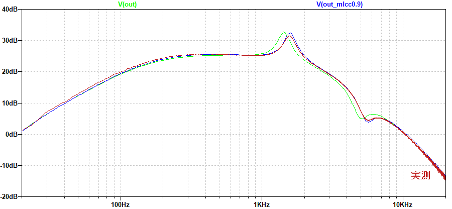

Vivie MINERVA Ver.1 解析
2023年02月27日 カテゴリー：修理・改造・解析
Vivie MINERVAは、数多くのアンプを解析したデータを元に生まれたオーバードライブペダルだそうです。Tubeというコントロールがあり、独特な回路が使ってあるのかもしれないと考えていました。現在はVer.2やscionという派生機種が販売されていますが、おそらく初期型と思われるものを中古で入手できたので解析することにしました。KiCadとLTspiceの回路図データはGitHubにあります。
▽基板画像
今回は、KiCad7の背景画像を追加できる機能を使っています。
WIMA社のフィルムコンデンサが目を引きますが、1mm×0.5mmの積層セラミックコンデンサも多く使われています。配線が全てコネクタ接続になっているのが特徴的で、組み込み時に半田付け作業が必要ないようにしていると思われます。
▽回路図
歪みは普通のダイオードクリッピングです。Super Badass DistortionやANODIZED BROWN DISTORTION 4Kの時と同様、ジャイレータ（シミュレーテッドインダクタ）が使われています。右上あたりのR16、R19については無しでもシミュレーション結果は変わらず、役割はわかりませんでした。
▽シミュレーション
- 回路全体 積層セラミックコンデンサ（MLCC）の影響（Level 100% Gain 0% Tone 100% Tube 100% Amp：JC）

シミュレーション（黄緑）に実測（赤）を重ねています。ズレがあるのは、SansAmp Bass Driver DI V1E+製作の際に報告した、高誘電率系MLCCの静電容量変化によるものだと推測されます。MLCCの容量を0.9倍にしてシミュレーションした場合（青）には、おおよそ一致しました。※以下のシミュレーションでは0.9倍する処理は行っていません。
- 回路全体 Amp Selectスイッチ JC/MS（Level 100% Gain 0% Tone 100% Tube 0%）
MSでは低音域と高音域がカットされる仕組みです。
- 増幅部 Gain変化 0%→50%→100%
あまり似ていませんが、Marshall The Guv'norの特性（黄緑）も載せています。MINERVAは、高音域のカットがやや大きくなっています。
- Tone周辺部 Tone変化 0%→50%→100% Amp：MS
Toneコントロールのローパスフィルタの前に、1kHzあたりがなだらかにカットされています。
- Tube周辺部 Tube変化 0%→50%→100% Amp：MS

Tubeコントロールで1.5kHz付近がブーストされ、5kHz（実測5.5kHz）付近はカットされています。このあたりが真空管アンプらしさと関係している部分なのかもしれません。